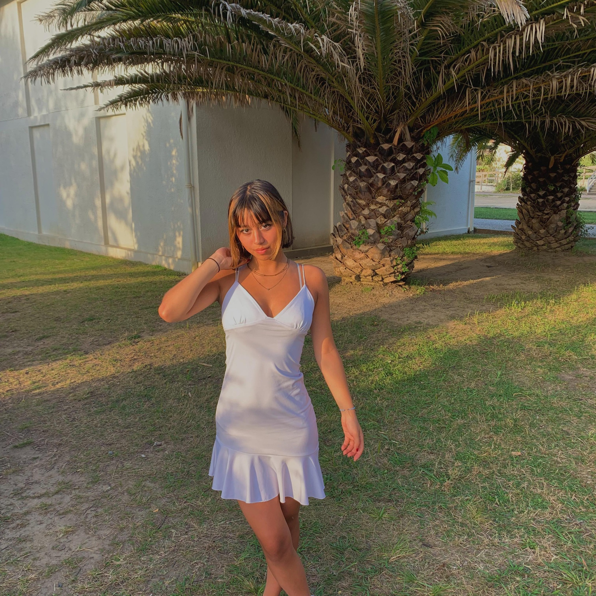
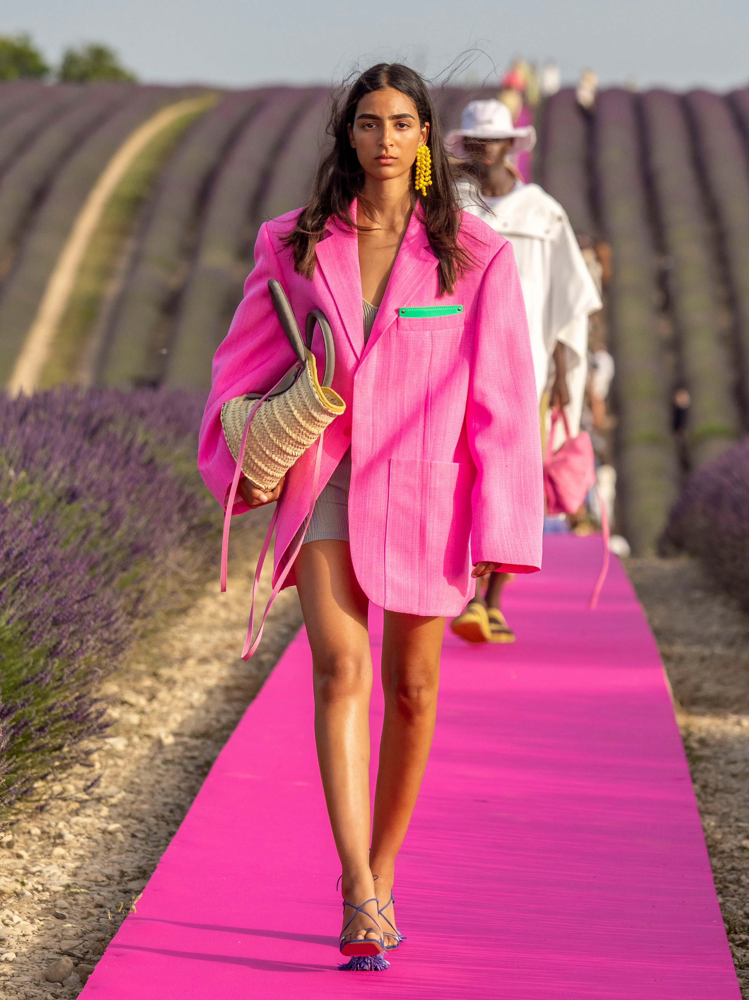
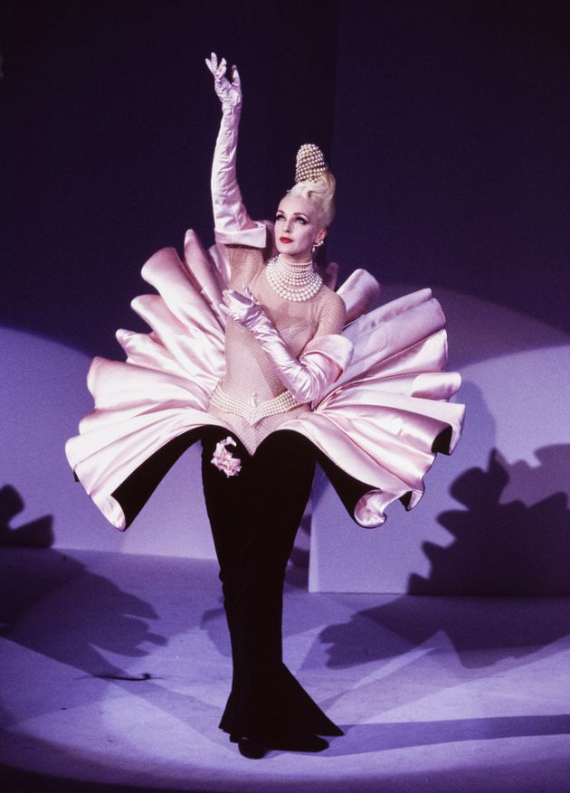
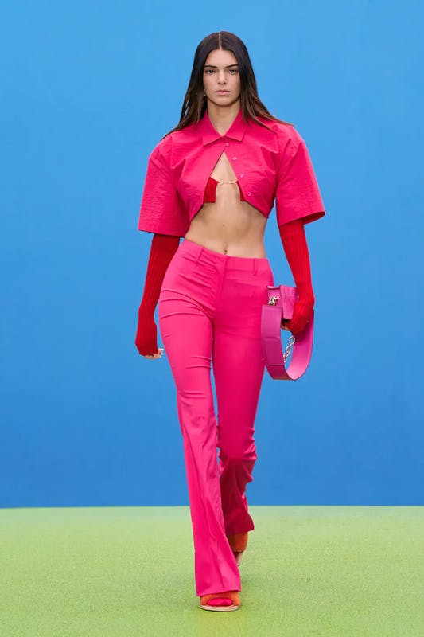
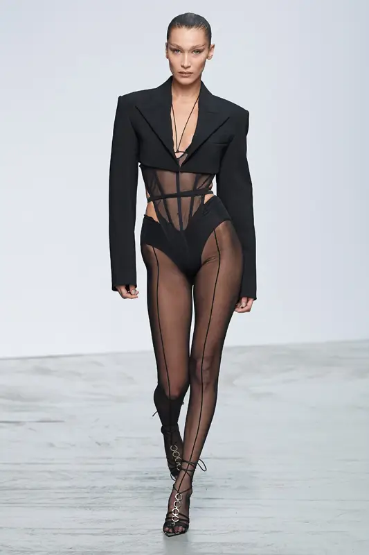
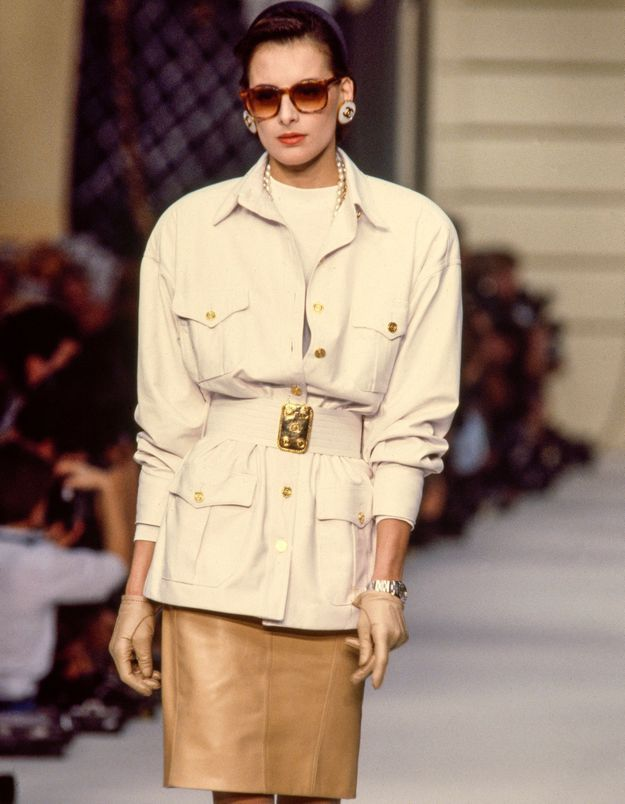
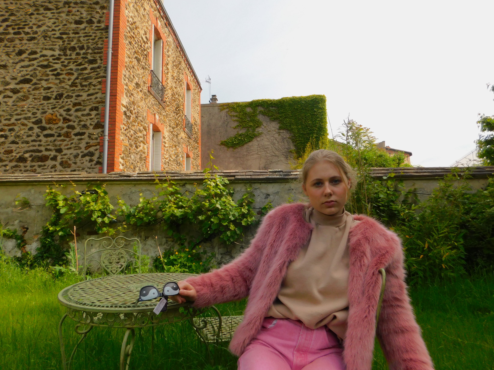
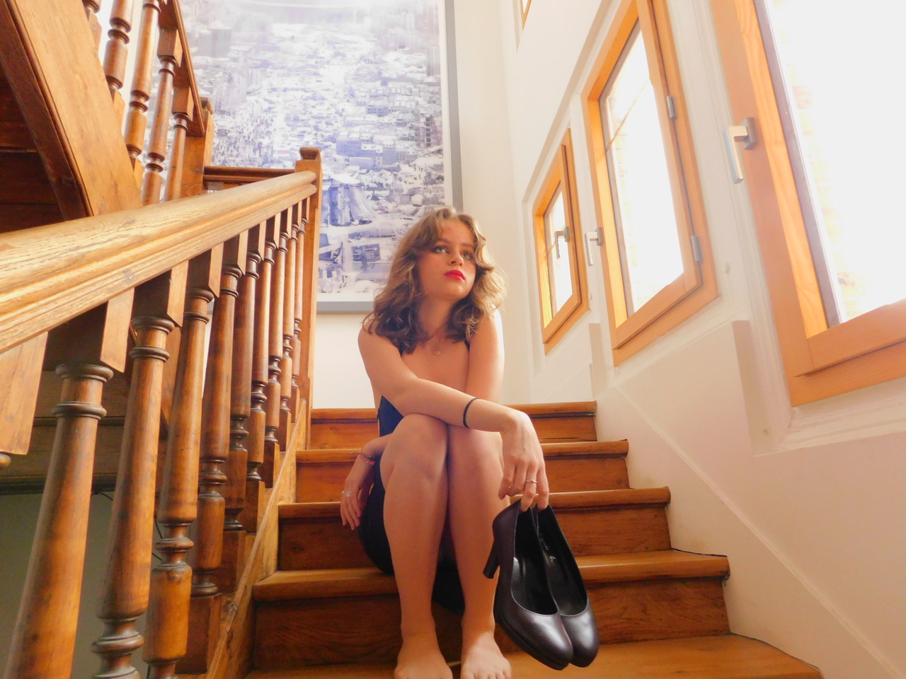
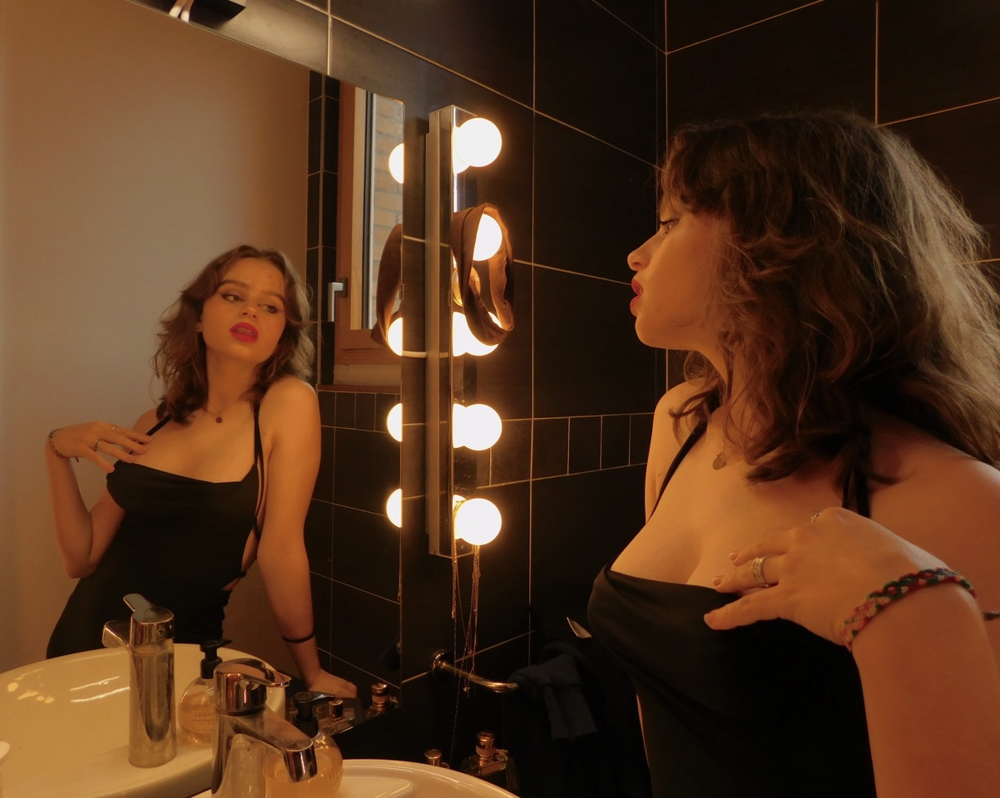
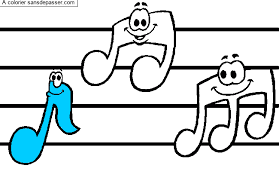

Hi, I'm Phibiane :))!
My name is Phibiane, I'm 18 years old and I'm currently in first year at ESSEC Business School; I love art, fashion, photography, reading and traveling. I am passionate about music and I have been playing the piano since I was 6 years old.
My favorite songFashion<3
I am passionate by fashion, I am currently at the fashion association of ESSEC "MODESSEC". In my free time, I love going to Paris to shop in thrift stores and I'm very interested in new fashion collections. My favorites creators are Jacquemus and Mugler.
    Photography:)
I am passionate by photography, I love taking pictures, I have a camera that I use very often, my favorite photographer is Helmut Newton
  Music!
I am passionate by music, I have been playing the piano since I was little, as well as the ukulele and I am learning the guitar. I did choir and many years at the conservatory. I love listening to music.
